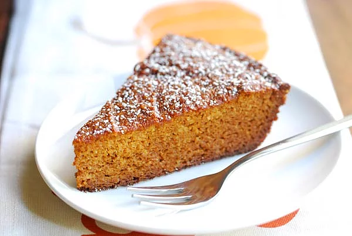
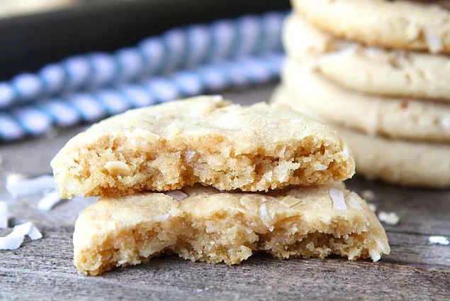
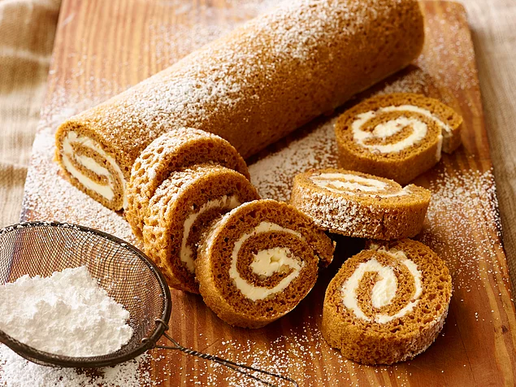
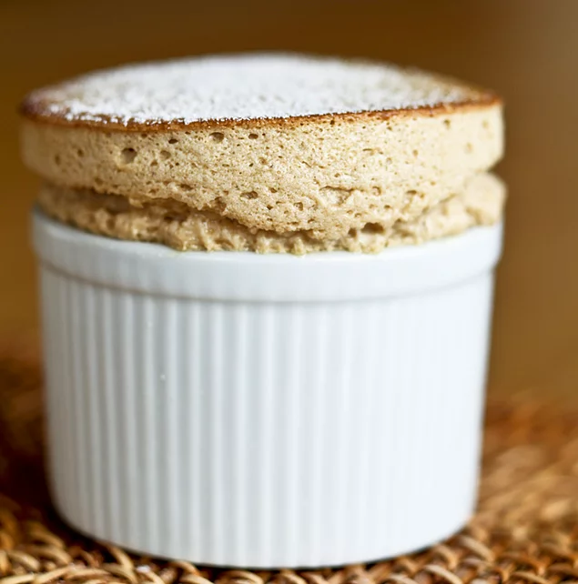
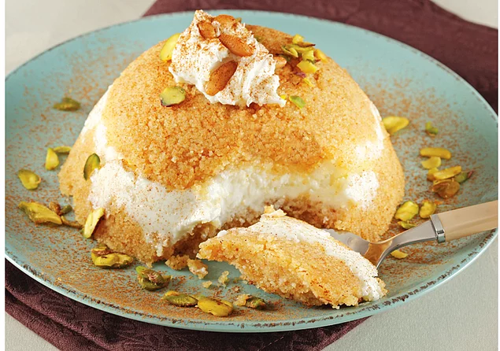
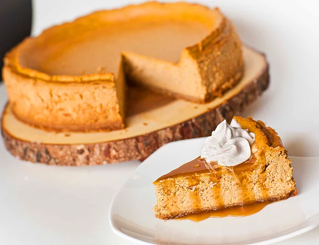
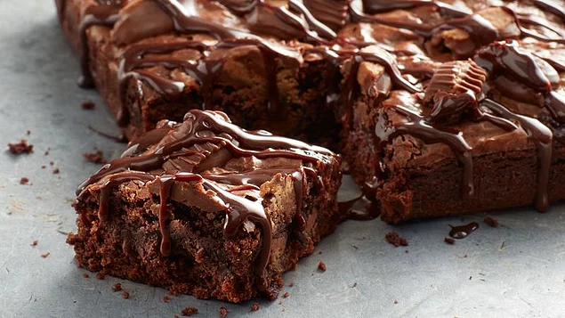
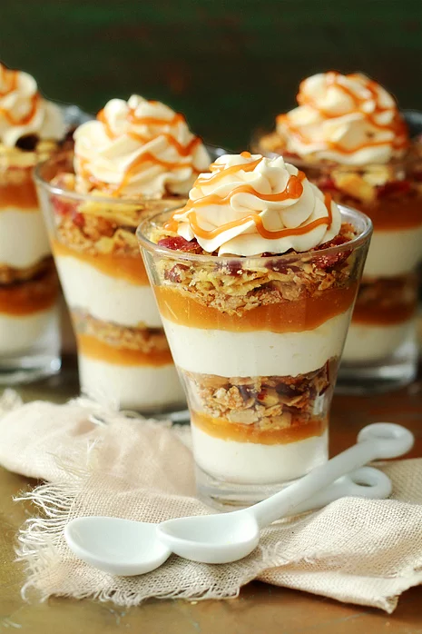
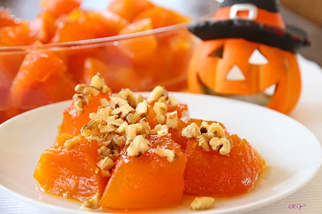

TATLILAR
Balkabaklı Kek

Malzemeler
<>3 yumurta
<>3/4 su bardağı tozşeker
<>1 su bardağı balkabağı tatlısı püresi
<>yarım su bardağından biraz fazla sıvıyağ
<>3 su bardağı elenmiş un
<>1 kabartma tozu
<>1 paket vanilya
<>Yarım su bardağı iri kıyılmış ceviz içi ve kuru üzüm
Yapılışı
⚫Yumurta ile tozşekeri kabarıp krema gibi olana kadar çırpın.
⚫Çırpmaya devam ederken sıvıyağı ilave edin.
⚫Balkabağı püresini ekleyip karıştırın.
⚫Buçuk bardak unu kabartma tozu ve vanilya ile birlikte karışımın üzerine eleyip düşük hızda mikserde veya tahta kaşıkla karıştırın.
⚫Çok akıcı olursa kalan yarım bardak unu ve en son kullanıyorsanız ceviz içini ve kuru üzümü ilave edip karıştırın.
⚫Yağlanmış unlanmış kek kalıbına aktarın. 170C derece ısıtılmış fırında kızarıp içi pişene kadar pişirin.
Hindistan Cevizli Kek

Malzemeler
<>2+3/4 SB un
<>1 TK kabartma tozu
<>1 TK karbonat
<>1/2 TK tuz
<>1 SB şeker
<>1 SB kahverengi şeker
<>2 yumurta
<>1 SB hindistan cevizi yağı
<>2 TK vanilya
<>1 SB hindistan cevizi
<>1 SB yulaf
Yapılışı
⚫Fırını 175 dereceye ayarlayın.
⚫ Unu, kabartma tozunu, karbonatı ve tuzu karıştırın.
⚫ Şekeri yumurta, hindistan cevizi yağı ve vanilyayı çırpın.
⚫ Unlu karışımı ekleyin.Çırpmaya devam edin.
⚫ Hindistan cevizi ve yulafı ekleyip spatulayla karıştırın.
⚫ 10 dakika pişirin. Soğuduktan sonra servis edin.
Balkabaklı Rulo Pasta

Malzemeler
<> 1/4 su bardağı pudra şekeri
<>3/4 su bardağı un
<>1 çay kaşığı kabartma tozu
<>1 çay kaşığı karbonat
<>1/2 çay kaşığı tarçın
<>1/2 çay kaşığı karanfil
<>tuz
<>3 yumurta
<>1 su bardağı toz şeker
<>1 tatlı kaşığı limon suyu
<>2/3 su bardağı kabak püresi
<>1 su bardağı kıyılmış ceviz içi
Krema için
<>1 yumurta
<>4 yemek kaşığı tozşeker
<>1,5 yemek kaşığı un
<>1,5 yemek kaşığı nişasta
<>2 su bardağı un
<>2 yemek kaşığı tereyağı
<>1/2 paket vanilya
Yapılışı
⚫Dikdörtgen fırın tepsinizi fırın kağıdı ile kaplayıp üzerini tekrar yağlayıp hazır hale getirin.
⚫Un, kabartma tozu, karbonat, vanilya, baharatlar ve tuzu birlikte bir kaba eleyin.
⚫Oda ısısındaki yumurtaları krema gibi olana kadar çırpın.
⚫Tozşekeri yavaş yavaş ilave ederek çırpmaya devam edin.
⚫Kabak püresi ve limon suyunu ilave edin.
⚫Unu azar azar ilave ederek karıştırın ve hazırlağınız tepsiye yayın. Üzerine kıyılmış ceviz içini serpiştirin.
⚫Önceden ısıtılmış 170 C dereceli fırında 15-20 dakika üzeri hafif kızarana kadar pişirin.
⚫Temiz bir mutfak kurulama bezini tezgaha yayıp üzerine pudra şekeri eleyin ve fırından çıkan keki bu beze ters çevirin. Sıcakken bezle birlikte rulo yapıp soğumaya bırakın.
⚫Soğuyunca malzemeleri karıştırarak pişirip hazırladığınız soğumuş kremayı kekin her tarafına sürerek tekrar sararak servis tepsinize alın.
⚫Soğuduktan sonra üzerine pudra şekeri serperek servis yapın.
Kahveli Sufle

Malzemeler
<>125 gr tereyağı
<> 120 gr bitter çikolata
<> 2 yumurta
<>2 yumurta sarısı
<>60 gr toz şeker
<>2 çay bardağı un
<>1 çay kaşığı granül kahve
<> Yarım çay bardağı sıcak su
Üzeri için
<>Pudra şekeri
Yapılışı
⚫ Tereyağı ile bitter çikolatayı bir cam kaseye alıp benmari usulü eritin ve karıştırarak ılındırın.
⚫ Yumurtalar, yumurta sarıları ve şekeri bir kasede mikserle çırpın.
⚫Tereyağlı çikolata, un ve yarım çay bardağı sıcak suya eklenmiş espressoyu ilave edip karıştırın.
⚫ Karışımı içleri yağlanmış sufle kaplarına üstten birer parmak boşluk kalacak şekilde doldurun.
⚫ Önceden ısıtılmış 200 derece fırında 10-12 dakika pişirin. Üzerine pudra şekeri serpip bekletmeden servis yapın
Balkabaklı Muffin
Malzemeler
<>2 su bardağı un
<>1 tatlı kaşığı kabartma tozu
<>1 su bardağı kabak püresi
<>1/3 su bardağı sıvıyağ
<>2 yumurta
<>1 çay kaşığı tarçın
<>1 çay kaşığı zencefil tozu
<>2 adet öğütülmüş karanfil
<>1 su bardağına yakın tozşeker
<>1 tatlı kaşığı karbonat
<>Tuz
<>Arzuya göre yarım su bardağı iri kıyılmış ceviz içi
Yapılışı
⚫Un ve kabartma tozunu bir kaba eleyin.
⚫Ayrı bir kapta yumurtaları, kabak püresini, yağı ve tozşekeri karıştırın.
⚫Karbonat ve tuzu ekleyin tekrar karıştırın.
⚫Son olarak elenmiş unu ilave edip tahta kaşıkla birleşene kadar karıştırın.
⚫12li muffin kalıplarına kağıt koyup hamuru kaplara kaşık yardımıyla paylaştırın.
⚫Üzerlerine tarçınla tozşekeri karıştırıp serpiştirin.
⚫Isıtılmış 170C derece fırında kabarıp kızarana kadar pişirin.
⚫Kalıplardan çıkarıp ılınınca servis yapın.
Dondurmalı İrmik Elvası

Malzemeler
Helva için
<>250 gr irmik
<>500 ml süt
<>500 gr toz şeker
<>175 gr tereyağı
<>40 gr çam fıstığı
Çikolata sos için
<>100 gr kuvertür çikolata
<>70 ml süt
<>30 gr margarin
Sunum için
<>60 gr kaymaklı dondurma
Yapılışı
⚫Tereyağını tavada ısıtın.Fıstıkları ekleyip kavurun.İrmiği ilave edin.
⚫ Ayrı bir yerde süt ve şekerin yarısını karıştırıp kaynatın.
⚫ İrmik pembeleşinceye kadar kavurun. Üzerine kaynayan şekerli sütü aktarıp 10 dakika kısık ateşte demlendirin.
⚫ Ocaktan alıp kalan şekeri üzerine serpip karıştırın. Soğumaya bırakın. Sos için, sos tenceresinde sütü kaynatın.
⚫ İçine çikolata ve margarini ilave edip karıştırın. Ocaktan alıp malzemeler karışıncaya kadar çırpın.
⚫ Helvayı bir kasenin içine ortası boş kalacak şekilde yerleştirin.
⚫ Ortasına kaymaklı dondurma ilave ettikten sonra tekrar irmikle kapatıp servis yapacağınız tabağa ters çevirin.
Balkabaklı Cheesecake

Malzemeler
Balkabağı kreması için
<>500 gr balkabağı
<>1 su bardağı şeker
<>2 yemek kaşığı nişasta
Peynir kreması için
<>1 paket labne peynir
<>3 adet yumurta
<>1 paket süt kreması
<>1 su bardağı şeker
<>1 paket vanilya
Keki için
<>2 paket burçak bisküvi
<>3 yemek kaşığı tereyağı
<>1 adet yumurta akı
Yapılışı
⚫Öncelikle fırını 180 derece ayarlayıp açıyoruz.
⚫Burçak bisküvileri eritilmiş tereyağı ve yumurta akını karıştırıp kelepçeli kalıbımıza bastırarak ve düzce yayıyoruz.
⚫Ardından başka bir kapta yumurtaları, şekeri şekerler eriyinceye kadar çırpıyoruz.
⚫Vanilya, krema ve Iabne peyniri ilave ediyoruz. Karışımı bisküvileri koyduğumuz kalıbımıza döküyoruz.
⚫Önceden ısıttığımız fırında üzeri kızarıncaya kadar pişiriyoruz. Fırından çıkartıktan sonra soğumaya bırakıyoruz.
⚫Balkabağı sosu için öncelikle baIkabağını ve şekeri bir tencerede yumuşayıncaya kadar pişiriyoruz.
⚫Yumuşayan balkabağını çatala ezip yarım su bardağı suyla nişastayı iyiçe karıştırıyoruz.
⚫Ezdiğimiz balkabağına döküyoruz. Mikser yardımıyla orta ateşte kaynayıncaya kadar karıştırıyoruz.
⚫Ocaktan aldıktan sonra ılınıncaya kadar karıştırmaya devam ediyoruz. Ardından sosumuzu cheesecake'in üzerine döküyoruz.
⚫1 gün buzdolabında bekletip kalıptan çıkarıyoruz. Arzuya göre üzerine ceviz serpip servis ediyoruz.
Çikolatalı Browni

Malzemeler
<>1 su bardağı bitter çikolata
<>Yarım su bardağı tereyağı
<>1 su bardağı şeker
<>4 adet yumurta
<>1 paket vanilya
<>1,5 su bardağı un
Üzeri için
<>Yarım su bardağı çikolata
<>1 yemek kaşığı tereyağı
Yapılışı
⚫Tereyağını eritin. Ardından çikolatayı benmari usulü eritin.
⚫ Ayrı bir kasede şekeri, ardından yumurtaları çırpmaya başlayın.
⚫Üzerine tereyağı, şeker, vanilya unu ekleyin. Yağlı kağıt serilmiş kare fırın kabınıza karışımı dökün.
⚫Önceden ısıtılmış 180 derece fırında 25-30 dakika pişirin. Fırından çıkan browninin ılımasını bekleyin.
⚫ Bu sırada, üzeri için çikolataları benmari yöntemi ile eritip içerisine tereyağı aktarın. Karıştırıp, browninin üzerine dökün.
Balkabaklı Trifle

Malzemeler
İlk kat için
<>1 bardak badem tozu
<>3-4 çorba kaşığı hindistancevizi yağı
<> Tarçın
<> Muskat
2. Kat için:
<> Yağsız süzme yoğurt
3. Kat için
<>1/2 bardak Balkabağı püresi(haşlanmış, süzülmüş ve rondodan geçmiş)
<>Tarçın
<>Muskat
<> 1 çorba kaşığı bal veya agave
Yapılışı
⚫1. Kat malzemelerini rondoda karıştırıp, kaşıkla bi bardağa koyun ve bastırın.
⚫2. Kat malzemelerini de karıştırın ve ilk katın üzerine dökün. Buzdolabına koyun.
⚫3. Kat malzemelerini hazırlayın, dolaptan çıkarıp en üste dökün ve 1 saat buzdolabında bekletin.
⚫Servis ederken üzerine doğranmış cevizle süsleyebilirsiniz.
Kaba Tatlısı

Malzemeler
<>1 kilo balkabağı
<>1 su bardağı toz şeker
<>Yarım su bardağı dövülmüş ceviz
<>2 çorba kaşığı bal
Yapılışı
⚫Öncelikle kabak ortadan ikiye kesilir, çekirdeklerinden temizlenir kabuğu soyulur ve büyük kareler halinde doğranır.
⚫Düdüklü tencereye alınır.
⚫Üzerine 1 su bardağı şeker gezdirilir.
⚫4-5 saat bekletilir.
⚫Düdüklü de kısık ateşte 5-10 dakika kabağın sertliğine göre pişirilir.
⚫Düdüklü tencerenin havası çıktıktan sonra kapağı açılır.
⚫Ceviz ve bal ile servis edilir.